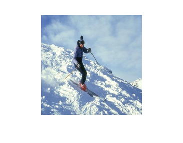
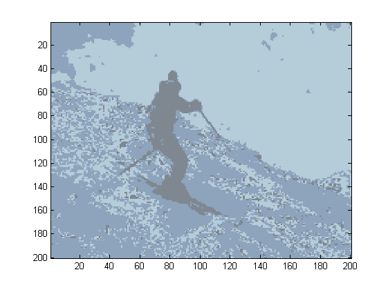
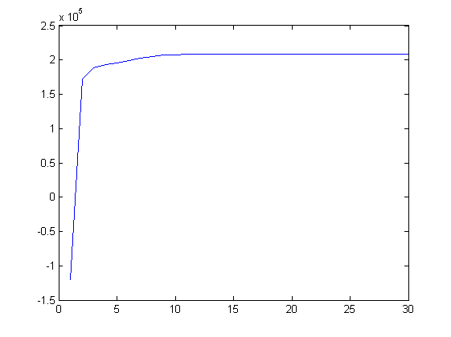

clc;
clear all;
close all;
dirName=strcat('D:\matlab2011a1\matlab2011a\bin\PRML657\Ass4');
img=imread(strcat(dirName,'\','ski_image.jpg'));
img=double(img)/255;
img=imresize(img, [200 200]);
imshow(img);
mean=[0.47, 0.05, 0.7; 0.47, 0.05, 0.7; 0.47, 0.05, 0.7;];
covariance=zeros(3,3,3);
covariance(:,:,1)=eye(3);covariance(:,:,2)=eye(3);covariance(:,:,3)=eye(3);
wt=zeros(3,1);
wt(1)=1/3;wt(2)=1/3;wt(3)=1/3;
s=size(img);
X=cell(1,3);
X{1}=img(:,:,1);
X{2}=img(:,:,2);
X{3}=img(:,:,3);
x=zeros((s(1)*s(2)),3);
x(:,1)=X{1}(:);
x(:,2)=X{2}(:);
x(:,3)=X{3}(:);
for n=1:30
GaussianR = mvnpdf(x,mean(:,1)',covariance(:,:,1));
GaussianG = mvnpdf(x,mean(:,2)',covariance(:,:,2));
GaussianB = mvnpdf(x,mean(:,3)',covariance(:,:,3));
LogLikelihood(n)=0;
for i=1:(s(1)*s(2))
sum=zeros(1,3);
sum(1,1)=sum(1,1)+wt(1)*GaussianR(i);
sum(1,2)=sum(1,2)+wt(2)*GaussianG(i);
sum(1,3)=sum(1,3)+wt(3)*GaussianB(i);
LogLikelihood(n)=LogLikelihood(n)+log(sum(1,1)+sum(1,2)+sum(1,3));
end
for i=1:(s(1)*s(2))
GammaR(i)=(wt(1)*GaussianR(i))/(wt(1)*GaussianR(i)+wt(2)*GaussianG(i)+wt(3)*GaussianB(i));
GammaG(i)=(wt(2)*GaussianG(i))/(wt(1)*GaussianR(i)+wt(2)*GaussianG(i)+wt(3)*GaussianB(i));
GammaB(i)=(wt(3)*GaussianB(i))/(wt(1)*GaussianR(i)+wt(2)*GaussianG(i)+wt(3)*GaussianB(i));
end
GammaR_prod=0;
GammaR_sum=0;
for i=1:(s(1)*s(2))
GammaR_prod=GammaR_prod+GammaR(i)*x(i,:);
GammaR_sum=GammaR_sum+GammaR(i);
end
mean(:,1)=GammaR_prod/GammaR_sum;
GammaR_prod=0;
for i=1:(s(1)*s(2))
GammaR_prod=GammaR_prod+GammaR(i)*(x(i,:)-mean(:,1)')'*(x(i,:)-mean(:,1)');
end
covariance(:,:,1)=GammaR_prod/GammaR_sum;
wt(1)=GammaR_sum/(s(1)*s(2));
GammaG_prod=0;
GammaG_sum=0;
for i=1:(s(1)*s(2))
GammaG_prod=GammaG_prod+GammaG(i)*x(i,:);
GammaG_sum=GammaG_sum+GammaG(i);
end
mean(:,2)=GammaG_prod/GammaG_sum;
GammaG_prod=0;
for i=1:(s(1)*s(2))
GammaG_prod=GammaG_prod+GammaG(i)*(x(i,:)-mean(:,2)')'*(x(i,:)-mean(:,2)');
end
covariance(:,:,2)=GammaG_prod/GammaG_sum;
wt(2)=GammaG_sum/(s(1)*s(2));
GammaB_prod=0;
GammaB_sum=0;
for i=1:(s(1)*s(2))
GammaB_prod=GammaB_prod+GammaB(i)*x(i,:);
GammaB_sum=GammaB_sum+GammaB(i);
end
mean(:,3)=GammaB_prod/GammaB_sum;
GammaB_prod=0;
for i=1:(s(1)*s(2))
GammaB_prod=GammaB_prod+GammaB(i)*(x(i,:)-mean(:,3)')'*(x(i,:)-mean(:,3)');
end
covariance(:,:,3)=GammaB_prod/GammaB_sum;
wt(3)=GammaB_sum/(s(1)*s(2));
end
for i=1:s(1)
for j=1:s(2)
[C I]=max([GammaR((j-1)*200+i) GammaG((j-1)*200+i) GammaB((j-1)*200+i)]);
if I==1
Output(i,j,:)=mean(:,1);
end
if I==2
Output(i,j,:)=mean(:,2);
end
if I==3
Output(i,j,:)=mean(:,3);
end
end
end
display(['Segemented Image'])
figure
imagesc(Output);
display(['Log Likelihood function convergence graph'])
figure
plot(LogLikelihood);
display(['Final Values of Means are'])
mean(:,1)
mean(:,2)
mean(:,3)
display(['Final Values of Covariances are'])
covariance(:,:,1)
covariance(:,:,2)
covariance(:,:,3)
display(['Final values of weights are'])
wt(1)
wt(2)
wt(3)
Segemented Image
Log Likelihood function convergence graph
Final Values of Means are
ans =
0.5584
0.6443
0.7434
ans =
0.4991
0.5329
0.5705
ans =
0.7110
0.8005
0.8527
Final Values of Covariances are
ans =
0.0247 0.0216 0.0102
0.0216 0.0191 0.0094
0.0102 0.0094 0.0060
ans =
0.0999 0.0974 0.0895
0.0974 0.0981 0.0914
0.0895 0.0914 0.0878
ans =
0.0119 0.0088 0.0039
0.0088 0.0065 0.0030
0.0039 0.0030 0.0015
Final values of weights are
ans =
0.4084
ans =
0.0926
ans =
0.4990
  